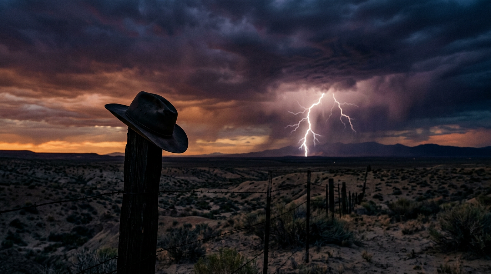

TV's golden age is real — by the numbers
Yes, prestige drama really did get better. But the rise hides almost entirely at the top of the distribution, where the elite tier multiplied roughly tenfold while everyone else barely budged.
The flat-mean trap
In 1990 the average IMDb rating for an American TV drama season was 7.94. In 2018 it was 8.08. That's a gain of 0.14 of a rating point in 28 years — barely visible to the naked eye and well inside the noise of any single year. Anyone arguing that television has dramatically improved on the strength of mean ratings alone is fighting a losing battle.
So why does almost every critic agree that we are living through a golden age of television? Why did The Economist in November 2018 publish a chart with the unequivocal title "TV's golden age is real"? The answer is in where you look.
Mean IMDb rating per year, 1990–2018
Y-axis intentionally narrow (7.5–8.3). Grey bars: number of seasons that year.
The prestige tier exploded
Slice the same dataset at the 9.0-out-of-10 line — the threshold above which IMDb voters effectively label a season as exceptional — and the picture changes completely. Through the entire late 1990s and most of the 2000s, that tier is essentially empty: 1999, 2000, 2001, 2002, and 2003 each produced zero seasons rated 9.0 or higher. Then in 2014 the count jumped to 13, in 2015 to 14, and in 2017 the dataset peaks at 16 prestige seasons in a single year.
By share, 2014 had 7.83% of all its drama seasons cracking the 9.0 line; the 1990s and early 2000s mostly produced 0–4%. The rate at which prestige TV is made roughly tenfolded.
Drama seasons rated 9.0+ on IMDb, by year
Bars highlighted in gold for the 2014–2017 peak. Hover for details.
That growth happened against a separate explosion in raw output. There were 207 drama seasons in the entire 1990s. There were 1,468 in just the nine years from 2010 to 2018 — seven times as many. FX chief John Landgraf had a name for this in 2015: Peak TV. The dataset shows both halves of his thesis — more shows, and a denser top.
What the top of the chart looks like
If you pull the twenty highest-rated seasons in the entire 28-year dataset, the names you'd expect cluster at the top. Breaking Bad's final season scored 9.55 on a 18.95% vote share — the largest sample of any season in its show. Game of Thrones season 6 (9.49) and season 4 (9.43). True Detective season 1 (9.33). Sherlock season 2 (9.32). BoJack Horseman season 5 (9.47).
But the very top has some quieter entries: Parenthood's first season in 1990 holds the dataset's all-time-high 9.68, and Touched by an Angel's fifth season scores 9.60. Both have vote shares under 2%. The pattern repeats: Are You Afraid of the Dark? season 3 (9.43, 2.6% share), Santa Barbara season 1 (9.40, 0.14% share). These are the data's reminder that "highest-rated" is not the same as "most-watched"; small fan bases vote loud.
The shape of the full distribution makes the point: out of 2,266 seasons, only 93 ever cross 9.0, and just four reach 9.5. The prestige tier exists because it is rare.
The top 20 seasons in the dataset
Each dot is one season. Bubble size = season's share of its show's votes. Gold = high share, grey = low share.
Sticking the landing

One pattern shows up in almost every prestige drama: ratings rise into season five and then fall. Pooling all 293 shows with at least three seasons in the dataset, the mean season-1 rating is 8.13, climbs to a peak of 8.32 by season 5, then drops to 7.91 by season 12. The cliché that shows go downhill after a few years is true on average — but only after season five, not before.
Across 293 multi-season shows, ratings peak at season 5
Mean season rating by season number. After season 5, fatigue.
Some of the most discussed prestige series obey the curve cleanly. Breaking Bad rises across all five seasons (8.71 → 8.77 → 8.75 → 9.11 → 9.55), the rare strict monotonic ascent. Mad Men climbs from 8.23 in season 1 to 8.85 in season 4 before drifting. The Sopranos sits in a tight band around 8.7–8.9 the whole way through. Game of Thrones rides up to 9.49 in season 6 before pulling back.
True Detective is the cautionary tale: 9.33 in season 1 — top-five in the entire dataset — collapses to 8.19 in season 2, a drop of 1.14 points. That was the show's last season in this snapshot.
Season-by-season arcs of seven landmark prestige dramas
Hover a line to highlight the show.
Risers and fallers
Rank shows by how much their final season improved on their first, and the biggest "late bloomer" is Criminal Minds, climbing 1.85 points across 14 seasons. Friday Night Lights rises 1.72; BoJack Horseman 1.69; Homicide: Life on the Street 1.29. These are the shows people argue got better.
At the other end sit the famous collapses. Dexter falls 1.97 points by its widely-mocked finale. Scrubs falls 1.95. The Walking Dead falls 1.68. True Blood falls 1.35. Bloodline falls 1.84. These are the data the phrase "jumped the shark" was invented for.
Late bloomers (▲)
Lost the plot (▼)
Where the rise lives, by genre
Decompose the 1990s-to-2010s rating drift by genre and the rise looks broad but uneven. Adventure rose 0.66 points; Action rose 0.43; Comedy rose 0.34; Crime rose 0.22; Drama itself rose 0.28. Two genres actually fell: Sci-Fi by 0.16 and Thriller by 0.29.
So the prestige era did not simply lift "drama" — it lifted dramas with genre flavor on top: action-dramas, adventure-dramas, crime-dramas. The shows readers think of as defining the era — The Sopranos, The Wire, Breaking Bad, Game of Thrones — sit in those exact intersections.
Genre-by-genre change in mean rating, 1990s → 2010s
Genres with at least 30 seasons total. Gold rose; red fell.
What the algorithm hides
Every number in this piece comes from IMDb's weighted vote average, an algorithm IMDb deliberately keeps secret to deter brigading. A "9.55" is not a simple mean; it is the algorithm's filtered consensus. That filter is doing more smoothing on a 2017 season with millions of votes than on a 1992 season with a few thousand.
IMDb voters self-select. They skew young, online, and engaged. The trend documented here is a rise in IMDb-voter consensus, which is correlated with — but not identical to — "objective" television quality. Three of the dataset's all-time-top-five entries (Parenthood S1, Touched by an Angel S5, Are You Afraid of the Dark? S3) sit on vote shares below 3% and would be invisible if you weighted by audience size.
None of this overturns the headline. It re-shapes it: more shows, denser top, with the prestige class growing faster than the average. Independent re-analyses extending past 2018 confirm the same trend, with a flattening only emerging around 2022–2023, after this dataset ends. That is what people mean when they say we are living through a golden age of television — and the data, at least through 2018, says they are right.
References
- Data: The Economist · graphic-detail-data · 2018-11-24_tv-ratings (IMDb + OMDb, 2,266 American drama seasons, 1990–2018)
- Article: "TV's golden age is real" — The Economist Graphic Detail, 24 November 2018
- Methodology: IMDb Weighted Average Ratings — IMDb Help
- Context — Peak TV: TV in the 2010s — TheWrap (John Landgraf coined "Peak TV" in 2015)
- Context — Sopranos / The Wire: How "The Sopranos" and "The Wire" paved the way for peak TV — CNN
- Independent re-analysis: Is TV's Golden Age (Officially) Over? — Stat Significant
- Tools: Vega-Lite 5 for charts, Python pandas 2.3 for analysis. Images generated with Google Gemini 3.1 Flash Image (Nano Banana 2) via OpenRouter.